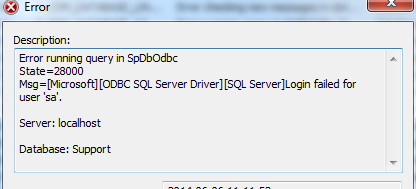
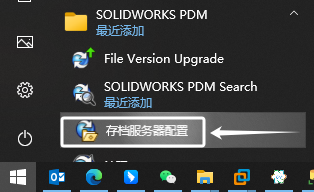
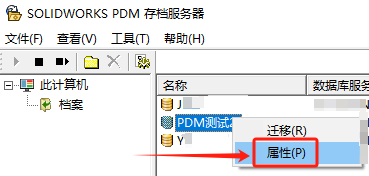
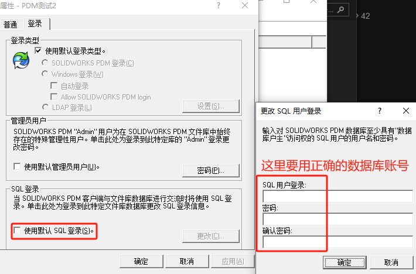
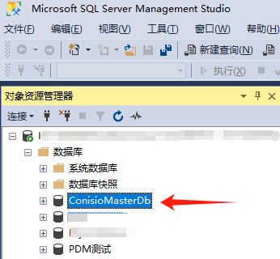
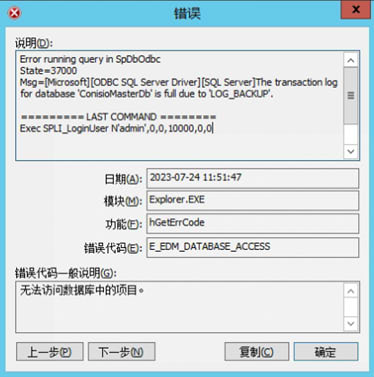
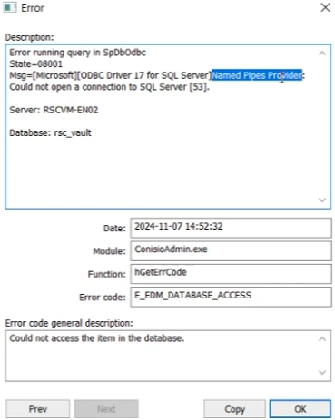

无法访问数据库中的项目

服务器名称
检查客户端这里的服务器是否正常或者该服务器连接访问是否正常
在客户端工作站注册表中，库数据库名称存储在以下位置的“DbName”值中：
1 | HKEY_LOCAL_MACHINE\SOFTWARE\SolidWorks\Applications\PDMWorks Enterprise\Databases\[库名称] |
在存档服务器注册表中，库数据库名称存储在以下位置的“SQLDbName”中：
1 | HKEY_LOCAL_MACHINE\SOFTWARE\SolidWorks\Applications\PDMWorks Enterprise\ArchiveServer\Vaults\[库名称] |
sa密码不正确
如果日志文件中的错误条目表明 SQL 登录失败，这可能是由于存储的 “sa” 密码不正确所致
可从 【Windows 开始>所有程序>启动存档服务器配置工具】
右键单击生成错误的 Vault，然后选择 Properties （属性）。
在登录选项卡下，将密码设置为默认或重新输入密码以确保密码正确。
重新启动服务。
缺少主数据库
如果将库数据库移动到新的服务器上却忘记移动 ConisioMasterDb，便会发生此错误。如果您重新安装 SQL 服务器并且没有重新连接 ConisioMasterDb 数据库，也会发生此错误。
要纠正此问题，请确保已在 SQL 服务器上恢复 ConisioMasterDb 数据库。或者，重新创建 ConisioMasterDb 数据库
方法1
要解决此问题并允许删除转换，可以使用脚本在删除转换之前删除链接到该转换的所有通知项。
修改前请先备份数据库。
记录删除失败的转换的名称、源状态和目标状态。关闭工作流。
加载附加的“ListAllWorkflowTransitions”。在sql管理工作室。在保险库数据库上运行它。
定位上述转换的TransitionID -确保源状态和目的状态匹配。
加载附加的“DeleteAllNotificationsForSelectTransition.sql”。确保使用上一步中的TransitionID进行更新。注意!运行此脚本后，所有链接到转换的通知都将被删除。
重新打开工作流。转换现在应该显示它没有通知。
删除转换后保存工作流现在应该成功完成。
方法2
参考安装手册P35。有一种情况是主数据库log文件满了导致。需要清除下日志。
问题日志
客户端日志显示fk_groupprojectnotification约束错误:
1 | 在SpDbOdbc中运行查询错误 |
导致
如果我们关注其中一个在修改时导致保存错误的转换(RnD EditingRequired)，我们可以看到它被配置为通知根文件夹“\Projects\”下的所有文件的两个组
此转换的两个组的通知分配为NotificationID = 547和548
问题日志
Named Pipes Provider：Could nat open a connection to SQl Server [53].
检查IP/DNS可达性：
检查服务器链接，在客户端电脑上，打开命令提示符，执行：
1 | ping <服务器IP> |
1 | telnet <服务器IP><空格>3030 |
设置host解析：
若无法ping通，检查网络配置、防火墙或DNS解析。
hosts文件是一个用于储存计算机网络中各节点信息的计算机文件；host文件所在位置：
1 | C:\Windows\System32\drivers\etc |